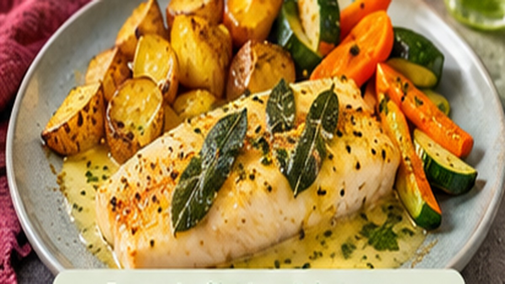

← Terug naar HelloFresh-recepten
🐟 Pangasiusfilet in saliebotersaus
Met curry-patatjes, courgette en wortel

620 kcal⏱️ 45 minGemiddeldCaloriebewustExtra groente
Ingrediënten
- 400 g aardappelen
- ½ zakje currypoeder
- 2 teentjes knoflook
- 5 g verse salie
- 2 wortels
- 1 courgette
- 2 pangasiusfilets
- 3 el olijfolie
- 2 el boter (zacht)
- Peper en zout
Bereidingswijze
- Verwarm de oven voor op 220 °C. Snijd de aardappelen in partjes, meng met het currypoeder, een el olie, peper en zout en rooster 35–40 minuten.
- Snijd wortels en courgette in stukken, meng met een el olie en rooster ze de laatste 20–25 minuten mee op een tweede bakplaat.
- Maak salieboter: hak de salie en één teentje knoflook fijn en prak ze door de zachte boter.
- Dep de pangasiusfilets droog en breng op smaak. Bak ze 3 minuten per kant in de rest van de olie.
- Voeg de salieboter toe aan de pan, laat smelten en schep de botersaus een paar keer over de vis.
- Serveer de vis met de saliebotersaus, de curry-patatjes en de geroosterde groenten.
Voedingswaarden (per portie):
Calorieën: 620 kcal
Eiwitten: 28.7 g
Bron: HelloFresh (caloriebewuste recepten). Hoeveelheden omgerekend naar 2 personen, bereiding in eigen woorden. Voedingswaarden gelden per portie.